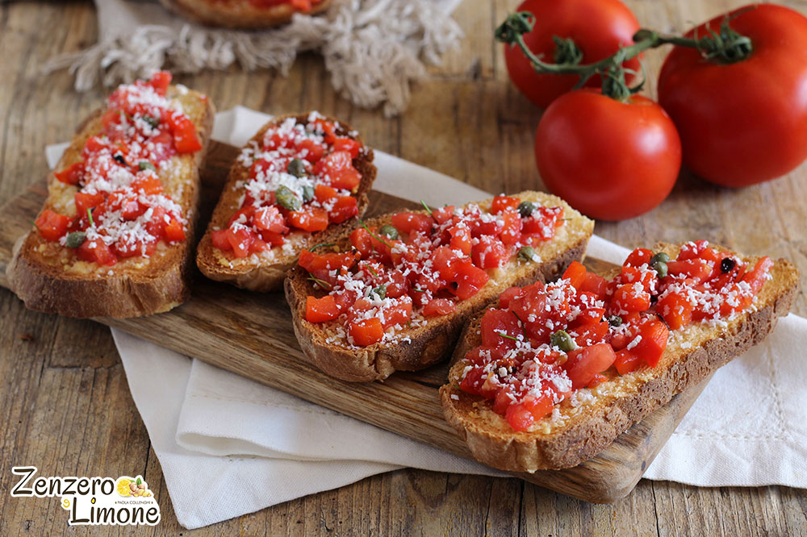

Todas la recetas con cebolla
Brusquette
Bruschetta originated in Italy during 15th century. However, the dish can be traced back to Ancient Rome, when olive growers would bring their olives to a local olive press and taste a sample of their freshly pressed oil using a slice of bread. more about this

Ingrediens
- 1/2 cup butter or margarine
- 3 large red onions, cut in half and thinly sliced
- 1/4 cup sugar
- 3 tablespoons raspberry or balsamic vinegar
- 1 loaf (1 pound) baguette bread, cut into 1/2-inch slices
- 1 tub (8 ounces) soft cream cheese with herbs or vegetables
- 2 tablespoons chopped fresh parsley
Steps
- In 12-inch heavy skillet, melt butter over medium-high heat until sizzling. Cook onions in butter 5 to 6 minutes, stirring frequently, until onions are softened. Stir in sugar and vinegar. Cook 9 to 10 minutes, stirring frequently, until onions are very soft and light golden brown. Cool onion mixture slightly, about 10 minutes.
- Set oven control to broil. Place bread slices on cookie sheet. Broil with tops 4 inches from heat 1 to 2 minutes or until lightly browned. Turn bread; broil 1 to 2 minutes longer or until lightly browned.
- Spread about 2 teaspoons cream cheese on each bread slice. Top each with 1 tablespoon onion mixture; sprinkle with small amount parsley.
Nutrition
270 Calories, 16g Total Fat, 5g Protein, 27g Total Carbohydrate
Tips
Tip 1
The caramelized onion mixture is also great on sandwiches and grilled meat.
Tip 2
The onion mixture can be made two or three days before serving and stored in the fridge. Then just toast the bread, assemble and serve.
Return Home